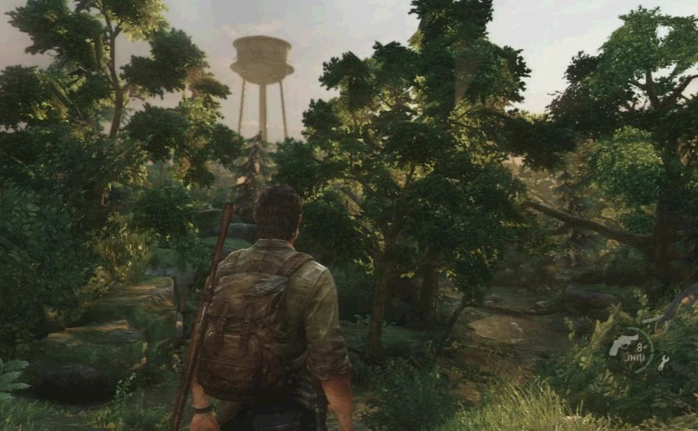

содержание
Питтсбург
Питтсбург
Глава
Глава

Сезон: лето
Подглавы:
Полное одиночество,
Лобби отеля,
Финансовый квартал,
Выберитесь из города
Локация:
Питтсбург
Персонажи:
Джоэл, Элли, Генри, Сэм, Джереми (упом.), Пэм (упом.), Пол-к Маккензи (упом.), Кап-н
Мейстрос (упом.), Ева (упом.)
Мультиплеер
Артефакты:
17
Учебники:
4
Комиксы:
4
Медальоны «Цикад»:
3
Хронология
Предыдущая глава:
Городок Билла
Следующая глава:
Пригород
«Питтсбург» - пятая глава в Одни из Нас (англ. The Last of Us).
На пути к Томми, Элли жалуется Джоэлу на комикс, что это интересное чтиво, однако кульминация - "продолжение следует", что ее невероятно злит. На вопрос Джоэла, где она его раздобыла, девочка говорит, что взяла у Билла. Джоэл интересуется, чего еще она утащила у него. Элли достает кассету и дает Джоэлу, комментируя, что это должно вызвать у Джоэла ностальгию, на что получает уточнение, что такие вещи были гораздо раньше его самого. Элли даже показывает журнал порнографического содержания для геев, который, по сути, не должна видеть. Отшучиваясь, она выкидывает журнал.
Джоэл и Элли въезжают в Питтсбург, однако дальнейший путь им преграждает большое количество брошенных машин. Не имея возможности проехать напрямую к мосту, Джоэл сворачивает к центру города вместо того, чтобы развернуться и попытаться найти обходной путь. Они проезжают улицу за улицей,пока к ним на встречу на дорогу неожиданно не выходит мужчина, прижавший руку к животу, молящий о помощи. Джоэл останавливает пикап. На вопрос Элли об их дальнейших действиях, он просит ее пристегнуться, так как, по его утверждению, мужик просто притворяется. Дав газ в пол, Джоэл понесся в сторону притворщика. Осознав, что ловушка не удалась, "больной" вытаскивает пистолет и стреляет по машине. Джоэл сбивает обидчика однако в это самое время, из всех укрытий, полезли охотники, наносящие раз за разом повреждения джипу различными метательными предметами пока не скатывают с горки автобус, который сбивает Джоэла и Элли; транспорт героев врезается в магазин, получив критические повреждения, вынуждая героев вступить в схватку. Разобравшись с налетчиками, Джоэл и Элли скрываются в прилегающем здании. Теперь им предстоит пешком проделать путь через огромные каменные джунгли. Начав очередное приключение, Элли выясняет каким образом Джоэл распознал ловушку. Оказывается, это связанно с тем, что некогда Джоэл сам был охотником, что схемы вовлечения "туристов" в ловушку ему хорошо известны, получив неоднозначную реакцию от Элли. По пути из города они также узнают, что власть военных была свергнута охотниками. На блок-посте они сталкиваются с очередной их группой, по воле случая (проскользнув или отбившись), им все-таки удается выйти к местной гостинице.
Сбежав от инфицированных преследователей, Джоэл начинает подъем к Элли. По пути ему встречается уже группа охотников. Ему удается разобраться с ними однако один охотник, скинув Джоэла с лестницы, начинает топить его в одном из образований в полу, наполненном водой. Джоэл практически погибает, но по воле судьбы, в этот момент Элли подоспевает на помощь и убивает охотника из пистолета Джоэла, который тот так не и смог достать. Тем не менее, вместо благодарности Элли получает упрек из-за того, что та не осталась на месте, как он ей приказал. Элли возмущает такой расклад и высказывает всё на чистоту, из-за чего между обоими возникает неловкое молчание. Как бы то не было, спустя несколько минут, они выбираются из гостиницы.
Ночью команда выбирается на улицу, чтобы миновать мост и встретиться у радиовышки за городом (заранее согласованное группой Генри место встречи, в случай, если они потеряют друг друга из виду). Пока охотники развлекаются убийствами щелкунов, Генри и Джоэл подбираются к воротам и отключают генератор. Разобравшись с нахлынувшей охраной, им удается отпереть ворота и выбраться за кордон, конечно же, заперев двери снаружи. Пока они пытаются перебраться через очередное препятствие, злосчастный Хамви пытается пробиться через ворота. Осознавая, насколько мало осталось времени для удачного ухода, Генри просит прощения у Джоэла (последний не смог забраться на контейнер из-за сломанной лестницы) и прихватил недоумевающего брата с собой. Но Элли не собирается бросать Джоэла и прыгает к нему. Вместе они бегут от выстрелов джипа, которому все-таки удается прорваться. Как обнаруживается, на самом мосту их ожидает тупик, так как дорога оказывается полностью обрушенной. Безысходность вынуждает не умеющую плавать Элли прыгнуть в воду, а Джоэл, зная это, конечно же прыгает за ней без раздумий. Уже в воде ему удается схватить Элли, но сильный поток сносит их на огромный камень. Выставив свою спину вперед, Джоэл сильно ударяется затылком и теряет сознание.
Глава «Питтсбург» содержит следующие предметы коллекционирования:
Сюжет
Полное одиночество
На пути к Томми, Элли жалуется Джоэлу на комикс, что это интересное чтиво, однако кульминация - "продолжение следует", что ее невероятно злит. На вопрос Джоэла, где она его раздобыла, девочка говорит, что взяла у Билла. Джоэл интересуется, чего еще она утащила у него. Элли достает кассету и дает Джоэлу, комментируя, что это должно вызвать у Джоэла ностальгию, на что получает уточнение, что такие вещи были гораздо раньше его самого. Элли даже показывает журнал порнографического содержания для геев, который, по сути, не должна видеть. Отшучиваясь, она выкидывает журнал.
Джоэл и Элли въезжают в Питтсбург, однако дальнейший путь им преграждает большое количество брошенных машин. Не имея возможности проехать напрямую к мосту, Джоэл сворачивает к центру города вместо того, чтобы развернуться и попытаться найти обходной путь. Они проезжают улицу за улицей,пока к ним на встречу на дорогу неожиданно не выходит мужчина, прижавший руку к животу, молящий о помощи. Джоэл останавливает пикап. На вопрос Элли об их дальнейших действиях, он просит ее пристегнуться, так как, по его утверждению, мужик просто притворяется. Дав газ в пол, Джоэл понесся в сторону притворщика. Осознав, что ловушка не удалась, "больной" вытаскивает пистолет и стреляет по машине. Джоэл сбивает обидчика однако в это самое время, из всех укрытий, полезли охотники, наносящие раз за разом повреждения джипу различными метательными предметами пока не скатывают с горки автобус, который сбивает Джоэла и Элли; транспорт героев врезается в магазин, получив критические повреждения, вынуждая героев вступить в схватку. Разобравшись с налетчиками, Джоэл и Элли скрываются в прилегающем здании. Теперь им предстоит пешком проделать путь через огромные каменные джунгли. Начав очередное приключение, Элли выясняет каким образом Джоэл распознал ловушку. Оказывается, это связанно с тем, что некогда Джоэл сам был охотником, что схемы вовлечения "туристов" в ловушку ему хорошо известны, получив неоднозначную реакцию от Элли. По пути из города они также узнают, что власть военных была свергнута охотниками. На блок-посте они сталкиваются с очередной их группой, по воле случая (проскользнув или отбившись), им все-таки удается выйти к местной гостинице.
Лобби отеля
Приблизившись к мосту, дуэту предстоит отыскать путь через гостиницу. Проход по частично разрушенному зданию проходит без особых проблем и задержек, исключая очередные стычки с охотниками. Тем не менее, помогая Элли выбраться из лифтовой шахты, Джоэл, будучи на крыше кабины лифта, срывается вниз когда тросы не выдерживают и рвутся. Благо, нижние этажи затоплены, и это позволило Джоэлу пережить падение, но теперь ему предстоит найти способ добраться обратно наверх. Приказав Элли оставаться на месте, Джоэл начинает свой путь. В подвальных помещениях он сталкивается с большим количеством сталкеров, и чтобы выбраться, ему предстоит включить генератор, который привлечет еще больше зараженных, включая топляка (исключен при легком режиме игры).Сбежав от инфицированных преследователей, Джоэл начинает подъем к Элли. По пути ему встречается уже группа охотников. Ему удается разобраться с ними однако один охотник, скинув Джоэла с лестницы, начинает топить его в одном из образований в полу, наполненном водой. Джоэл практически погибает, но по воле судьбы, в этот момент Элли подоспевает на помощь и убивает охотника из пистолета Джоэла, который тот так не и смог достать. Тем не менее, вместо благодарности Элли получает упрек из-за того, что та не осталась на месте, как он ей приказал. Элли возмущает такой расклад и высказывает всё на чистоту, из-за чего между обоими возникает неловкое молчание. Как бы то не было, спустя несколько минут, они выбираются из гостиницы.
Финансовый квартал
Практически у стен гостиницы Джоэл находит снайперскую винтовку. В его планах отчистить улицы от всех охотников, чтобы безопасно пройти. Он дает Элли пару уроков по стрельбе из оружия, оставляя ее на возвышенной позиции. Перед прыжком на улицы, он поворачивает голову в сторону Элли, и робко благодарит за спасение (в русской локализации; в оригинале Джоэл все-таки признает правоту девочки, но не говорит "спасибо"), на что Элли, оставшаяся одна, говорит: "всегда пожалуйста". Пытаясь проделать все как можно тихо и незаметно, Джоэла все-таки замечают, но Элли оказывает достойное прикрытие со своей позиции. Очистив наконец-таки улицу и прилегающие к ней нижние помещения зданий, Джоэл дает подоспевшей к нему Элли пистолет калибра 9mm, комментируя, что это только "в экстренных ситуациях". Пробираясь через финансовый квартал, их обнаруживает военный Хамви, управляемый охотниками. Дабы избежать смерти, Джоэл и Элли стремятся скрыться в верхних этажах прилегающих к дороге зданий.Выберитесь из города
Стряхнув со своего хвоста смерть на колесах, главные герои сталкиваются с другими выжившими, хотя встреча проходит не очень гладко. Приняв друг друга за противников, Джоэл и будущий знакомый, Генри, завязывают драку, в которой, по видимому преимуществу опыта и силы, сразу же начал проигрывать второй. Тем не менее, наставленный на Джоэла пистолет младшего брата Генри, Сэма, дает возможность ситуации обрести более ясные очертания. Оказывается, Генри и Сэм вместе с некоторыми членами своей группы отправились в Питтсбург на поиски припасов, что, очевидно, должно было закончится встречей с охотниками. Так и случилось: группа разделяется, и каждый пытается скрыться, как может. Генри предлагает героям объединиться, чтобы увеличить свои шансы на побег, уточнив, что знает способ; возражений не поступило. Генри отводит новых соратников в их с Сэмом убежище, дабы дождаться ночи, чтобы увеличить шансы на удачный исход побега из-за ослабленного патруля. Во время ожидания, Джоэлу удается узнать больше о союзниках.Ночью команда выбирается на улицу, чтобы миновать мост и встретиться у радиовышки за городом (заранее согласованное группой Генри место встречи, в случай, если они потеряют друг друга из виду). Пока охотники развлекаются убийствами щелкунов, Генри и Джоэл подбираются к воротам и отключают генератор. Разобравшись с нахлынувшей охраной, им удается отпереть ворота и выбраться за кордон, конечно же, заперев двери снаружи. Пока они пытаются перебраться через очередное препятствие, злосчастный Хамви пытается пробиться через ворота. Осознавая, насколько мало осталось времени для удачного ухода, Генри просит прощения у Джоэла (последний не смог забраться на контейнер из-за сломанной лестницы) и прихватил недоумевающего брата с собой. Но Элли не собирается бросать Джоэла и прыгает к нему. Вместе они бегут от выстрелов джипа, которому все-таки удается прорваться. Как обнаруживается, на самом мосту их ожидает тупик, так как дорога оказывается полностью обрушенной. Безысходность вынуждает не умеющую плавать Элли прыгнуть в воду, а Джоэл, зная это, конечно же прыгает за ней без раздумий. Уже в воде ему удается схватить Элли, но сильный поток сносит их на огромный камень. Выставив свою спину вперед, Джоэл сильно ударяется затылком и теряет сознание.
Коллекционные материалы
Глава «Питтсбург» содержит следующие предметы коллекционирования:
- Артефакты - 17
- Шланг для слива топлива - артефакт, который Джоэл получает от Билла. Автоматически находится в рюкзаке Джоэла.
- Имущество Туристов - в гараже, где герои обнаружат двух мертвых людей и большое количество одежды, на перевернутой тележке.
- Карта засад - выйдя в коридор второго этажа, в дальнем конце его будет дверь, за которой на стене и будет висеть данный артефакт.
- Записка о потерянной высоте - после входа в карантинную зону «Питтсбург», в кабине, обложенной мешками с песком.
- Листовка о предателях - у главного входа в книжный магазин на стене, возле навесов.
- Записка об уходе из зоны - в книжном магазине в задней правой части, в первом офисе на столе.
- Инструкция для военных - у главного входа в книжный магазин под ближайшей лестницей справа.
- Карта потерянных районов - за запертой дверью, которую нужно взломать ножом, на втором этаже книжного магазина, у кафетерия.
- Письмо матери - за запертой дверью с красной пометкой в виде креста, за синим фургоном, на подходе к гостинице.
- Записка о тайнике - на втором этаже кофетерии, которое находится прямо напротив гостиницы.
- Записка персоналу - когда герои заберутся на второй этаж лобби, необходимо пройти вдоль стенки у разрушенной лестницы к уровню над рецепцией.
- Пропуск из отеля - можно найти в комнате охраны в подвальных помещениях (сюжетный).
- Записка о Цикадах - в холодильнике кафе по продажи сэндвичей, рядом с кофейней.
- Записка о решающем ударе - после расправы над туристами охотников на Хамви, на втором этаже будет небольшая комната офисного типа, у разбитого окна под последним из них и будет лежать записка.
- Записка о расправе - в здании неподалеку от прошлого артефакта с полностью разрушенной лицевой стеной, на втором этаже под компьютеном столом.
- Записка о внедорожнике - в здании распределения рационов (Ration Depot), прежде чем взобраться по лестнице в район, где находится военная школа-интернат.
- Записка о суде - в комнате для переговоров архитектурной компании, где и находится убежище Генри и Сэма.
- Медальоны Цикад - 3
- Казден Риск (000153) - в темном переулке, по левую сторону от главного входа в книжный магазин.
- Голби Рид (000232) - в дальнем конце женского туалета, до входа в банкетный зал, спрыгнув с обрушенного лестничного пролета.
- Лукас Риос (000295) - до входа в помещение архитектурной компании, где, в кабинете управляющего директора, и располагается убежище Сэма и Генри, в мужском туалете на бочке унитаза.
- Справочники - 4
- Справочник по медицине, том 1 - находится на втором этаже гаража, в жилой комнате бандитов, на железной полке, ближе к дальнему выходу их комнаты.
- Справочник по ножам, том 2 - находится в сейфе в офисе рецепции, комбинация к которому находится в записке персоналу.
- Справочник по холодному оружию, том 1 - в коридоре на столе, возле забаррикадированного главного входа в гостиницу, недалеко от найденного медальона Голби Рида.
- Справочник по коктейлям Молотова, том 1 - в той же самой квартире, где Джоэл и Элли столкнутся с Генри и Сэмом, на кухне.
- Комиксы - 4
- Дикие Звезды: Силовая Линия - автоматически находится среди артефактов в рюкзаке, после начала главы.
- Дикие Звезды: Гелиосфера - по шоссе на пути к мосту в разрушенном автобусе.
- Дикие Звезды: Аккреция - забравшись по лестнице на второй этаж, после того как Элли спасет Джоэла, необходимо держаться левой стороны. Пройдя вдоль стенки, на одном из столов будет лежать комикс.
- Дикие Звезды: Глубокая фаза - за запертой дверью после встречи Джоэла и Элли с Генри и Сэмом.
Необязательные разговоры
- В гараже, где герои обнаружат два трупа "туристов", большую кучу одежды и артефакт.
- После выхода на шоссе, за автобусом, в котором можно найти комикс Дикие Звезды: Гелиосфера. (Внимание: из-за возможного тайминга, если медлить с активацией диалога, то можно его пропустить. Совет: сначала активировать диалог, а потом взять комикс).
- После входа в карантинную зону "Питтсбург" через крышу автобуса, у стены с надписью "Stop feeding us lies! Give us our rations!", в метре от артефакта Записка о потерянной высоте.
- После выхода на главную улицу, где охотники вбегают в гостиницу, необходимо развернуться в конец улицы и найти витрину с постером девушки.
- В лобби гостиницы у стойки бара, в левой стороне помещения, трудно пропустить.
- На втором этаже жилого корпуса гостиницы, в номере, где находятся два трупа в ванной.
- В банкетном зале у декорации побережья тропических стран.(Внимание: активация происходит три раза).
- После выхода из гостиницы и очистки зоны от охотников, у повешенного на дереве человека.
- У лестницы, рядом с зданием по распределению рационов, где можно обнаружить артефакт Записка о внедорожнике, где на стене здания написано "Death for Freedom".
- У заброшенной школы-интернат для военной подготовки детей с карантинной зоны.
- Напротив школы-интерната у афиши к фильму "Рассвет Волка".
Запертые двери
- На втором этаже книжного магазина, по правую сторону от 'Rivers cafe', слева от стойки которой будет выход на улицу.
- После ролика, как двое охотников убирают планку для перехода с автобуса в гостиницу, за синим грузовиком будет дверь с красным крестиком.
- После расправы с очередным патрулем охотников, необходимо найти здание 'HS&L Credit Union'. Дверь будет находиться в дальней из комнат (до того как Джоэл поможет Элли взобраться на лестницу).
- После встречи с Генри и Сэмом, спустившись с лестницы, дверь будет прямо перед Джоэлом.
Интересные факты
- При въезде в город в машине играет песня "Alone and forsaken" знаменитого кантри певца Хэнка Уильямса (англ. Hank Williams).
- Находясь в гостинице, в одном из номеров, можно обнаружить газету с заголовком: "Uncharted 13: A Lush Movie — Justin Bieber as Drake." (букв. Uncharted 13: Сногсшибательное Кино, в роли Дрейка - Джастин Бибер)
- После встречи с Сэмом и Генри, игрок сможет найти куклу Нейтана Дрейка, героя серии игр "Uncharted", на кровати в детской комнате совместно с Джеком и Декстером на комоде.
- В том же здании, где герои встречают Сэма и Генри, можно найти коврик для мышки от Naughty Dog.
- После первой засады охотников Джоэл признаётся, что в прошлом он также действовал подобным образом, однако не уточняет подробности. Пользователь -anne-marie- была найдена записанная для игры фраза, где Джоэл раскрывал детали своей ранней жизни.
- Игрок, по сюжету игры, попадет в магазин игрушек, где на самой дальней полке помещения можно найти настольную игру серии "Uncharted", также как и настольную игру "Джека и Декстера".
- Можно увидеть, как Элли крутится возле игрушечного робота, но возьмет его только тогда, когда Джоэл будет стоять к ней спиной.
- Даже если пройти местность после отеля скрытно, Джоэл всё равно похвалит Элли за стрельбу.